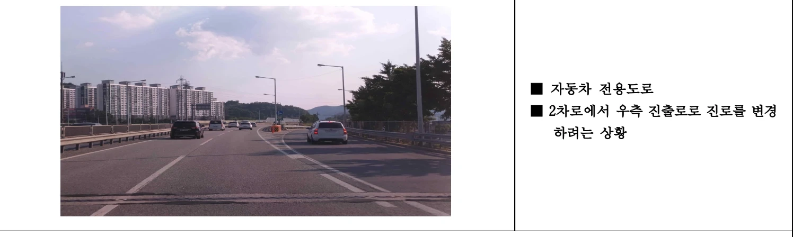

735. Which of the following are the safest ways to drive in the given situation? (Select TWO)

- ①If traffic is congested on the off-ramp, pass through the safety zone to exit quickly.
- ②When entering the off-ramp, stay close to the vehicle ahead to prevent other vehicles from cutting in.
- ③Change lanes to exit on the section marked with a combination of dotted and solid white lines.
- ④If you realize you have taken the wrong route after switching to the right off-ramp, go back to the main lane on the left to proceed.
- ⑤Turn on the right-turn signal when switching to the off-ramp.
Show answer
Answer
③ Change lanes to exit on the section marked with a combination of dotted and solid white lines.
⑤ Turn on the right-turn signal when switching to the off-ramp.
Reference
The vehicle's direction must not be changed in places where safety signs are installed and direction changes are specifically prohibited. You can change course in the white dotted line section, but you must not change course in the solid white line section. In sections with double line markings with solid white and dotted lines, course changes are only possible on the side with the dotted line. When changing directions, you must turn on the turn signal and check the safety of vehicles moving forward and behind, and entering the safety zone is prohibited.
Reference text is a machine translation for study.